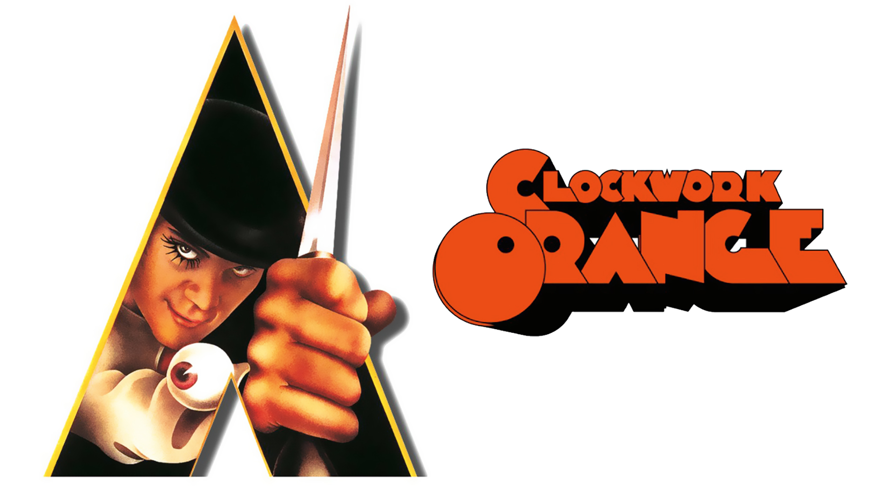

Práctica 3
A Clockwork Orange

"No creo tener que recordar a los lectores el significado del título.
Las naranjas mecánicas no existen, excepto en el habla de los viejos londinenses.
La imagen era extraña, siempre aplicada a cosas extrañas. «Ser más raro que una naranja mecánica»
quiere decir que se es extraño hasta el límite de lo extraño. En sus orígenes «raro»
[queer] no denotaba homosexualidad, aunque «raro» era también el nombre que se daba
a un miembro de la fraternidad invertida. Los europeos que tradujeron el título como
Arancia a Orologeria o Orange Mécanique no alcanzaban a comprender su resonancia
cockney y alguno pensó que se refería a una granada de mano, una piña explosiva más
barata. Yo la uso para referirme a la aplicación de una moralidad mecánica a un
organismo vivo que rebosa de jugo y dulzura."